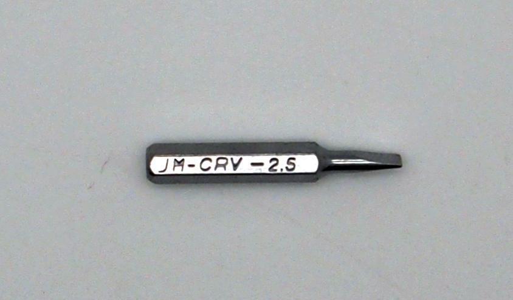
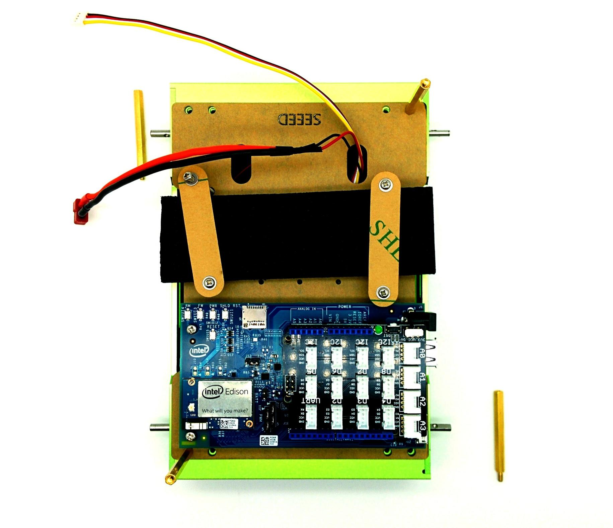
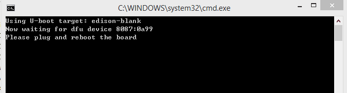
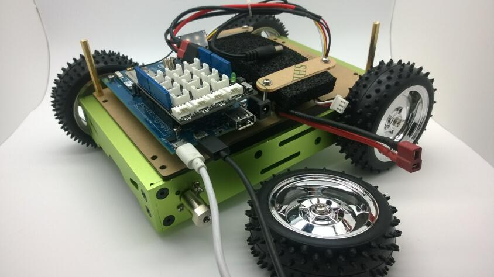

The 4WD Auto Robotic Platform is a powerful mobile unit with the Intel Edison Arduino kit, to control this platform you have to use a smart phone or a computer with wifi capable to connect to its wifi accessible piont, open a web browser input the address http://192.168.42.1:8000 than a operation dashboard comes up. This is a primary project if you are a maker and ability to hack this platform welcome to do a stronger remake.
| Parts | Specification | Material | Quantity | |
|---|---|---|---|---|
| 1 | Bracket 1 | 200*35*20mm*3.0mm | Aluminum | 2 pcs |
| 2 | Bracket 2 | 135*35*20mm*3.0mm | Aluminum | 2 pcs |
| 3 | Angle Joint Structure | 29*12*10mm*2.0mm | Metal | 4 pcs |
| 4 | Top Plate | 200*132*1.5mm | Aluminum | 1 pcs |
| 5 | Bottom Board | 199*129*2.0mm | Acrylic | 1 pcs |
| 6 | Battery Fixer | 67*15*2.0mm | Acrylic | 2 pcs |
| 7 | Upper Board | 184*132*2.0mm | Acrylic | 1 pcs |
| 8 | Wheel | Ф85mm*W31mm | Plastic & Rubber | 4 pcs |
| 9 | Shaft Coupler | for Ф4mm shaft | Metal | 4 pcs |
| 10 | DC Motor | Spec | 2 pcs | |
| 11 | DC Motor (Encoder Included) | Spec | 2 pcs | |
| 12 | Distance Holder | M3.0*H45+6.0mm | Metal | 4 pcs |
| 13 | Distance Holder | M3×10mm | Metal | 4 pcs |
| 14 | Distance Holder | M2*10mm | Metal | 3 pcs |
| 15 | Hexagon socket Countersunk Head Screw | M4.0*H8.0mm | Metal | 16 pcs |
| 16 | Cross Recessed Pan Head Screw | M4.0*H8.0mm | Metal | 4 pcs |
| 17 | Cross Recessed Pan Head Screw | M3*35mm | Metal | 4 pcs |
| 18 | Cross Recessed Pan Head Screw | M3*8mm | Metal | 30 pcs |
| 19 | Cross Recessed Pan Head Screw with Washer | M3.0*H6.0mm | Metal | 8 pcs |
| 20 | Screw, Spring Lock Washer and Plain Washer assemblies | M2*8mm | Metal | 6 pcs |
| 21 | Hexagon Nut | M3 | Metal | 8 pcs |
| 22 | Spring Lock Washer | M4 | Metal | 4 pcs |
| 23 | Plain Washer | M3*7*0.5 | Metal | 4 pcs |
| 24 | Screw Driver | Metal & Plastic | 1 pcs | |
| 25 | Hexagonal Head Wrench | Metal | 1 pcs | |
| 26 | Grove - I2C Motor Driver | PCB | 1 pcs | |
| 27 | Base Shield V2 | PCB | 1 pcs | |
| 28 | Grove - Universal 4 Pin Buckled 20cm Cable | Cable | 1 pcs | |
| 29 | Dean Parallel Adapter | Plug | 1 pcs | |
| 30 | Male of Dean Power Cable | Cable | 1 pcs | |
| 31 | Dean to DC Power Cable | Cable | 1 pcs | |
| 32 | TRX to Dean Power Cable | Cable | 1 pcs | |
| 33 | Cable Tie | 3*60mm | Plastic | 3 pcs |
| 34 | Assembly Instruction | A4 | Copy Paper | 1 pcs |
Assembly Instruction.pdf
1.Assemble the main body.
2.Connect the cables
1) Below are the parts with cables to be connected, you need a 2.5mm Slotted head screwdriver to srew the motor driver.

2)Stick the aluminum heatsinks to the chips on the motor driver, and assemble the middle board.
3)Connect the motor driver，the motor group's black cables connect to "M1-" "M2-" and the red ones connect to "M1+" "M2+", connect the power cable,the black cable to "GND", the red one to "VS".
4)Assemble the motor group into the main body, the motor in the same group must assemble to the same side. Use a nylon cable to tie up the wires,then plug the grove cable.
5)Put on the middle board, the power cable and the grove cable were to across the right hole.

6)Plug the 1-to-2 power connector the battery adapter cable and the arduino board power cable, the grove cable connect to A0 pin of the Base Shield.
7)Carefully plug the battery connector to get power up, test if it was right done now, if no led light up you must check the problem.
8)Plug the USB cables to test the software.
3.Continue assembling
Although the Edsion Arduino can be programed by arduino IDE but for stronger development we got into the linux system to do some low level development. The most important resource is the mraa library which provided by Intel, things aren’t that idealized that there are difficulties in our early development, in order to build a convenient development Environment we copy the partition of rootfs out of the linux file system in which we have already configured all the needed resource and built the 4WD platform project. The only thing you should do to have this platform work is to flash a new firmware into Edison. If you want to know what we have done in the linux system and how to do your own project see the github repository:
https://github.com/Seeed-Studio/Edison_WiFi_Car
Follow the Edison official web site getting started to install required drivers and the terminal emulator PuTTy.
Download dfu-util - Device Firmware Upgrade Utilities and extract the xz file to “C:\” or any other directory.
Add Environment Variables
Right click This PC > Advanced system setting > Environment Variables > copy the path of dfu-util.exe to catch the “Path” environment variable.
1.Download and unzip
Download customized firmware from seeed wiki
Download customized firmware from google drive
Download customized firmware from onedrive
2.Use the PuTTy
Follow the official Edison Getting Started Guide to log in edison with PuTTy.
3.Flash firmware
Follow the below steps.
Step 1. Double click flashall.bat

Step 2. Go to PuTTy input command line reboot or press the RESET button on the Edison Arduino board.
Step 3. Flashing firmware
Step 4. Edison reboot and Wi-Fi Car service started.
Step 5: Restart the power
Disconnect and reconnect the battery.
See Intel Edison official web site "Alternate Flashing Method".
1.Download customized image
>>wget http://www.seeedstudio.com/wiki/images/a/a6/Edison-image-rel1-maint-rel1-ww42-14-for-wificar.zip >>unzip edison-image-rel1-maint-rel1-ww42-14-for-wificar.zip >>7z x edison-image-rel1-maint-rel1-ww42-14-for-wificar.7z
2.Flash image
1)Intall dfu-util
sudo apt-get install dfu-util
2)Check which device is for edison:
>>ls /dev/ttyUSB*
3)Open serial terminal
>>sudo screen /dev/ttyUSB0 115200
4)Run flashall.sh
>>cd edison-image-rel1-maint-rel1-ww42-14-for-car >>sudo ./flashall.sh
5)Goto edison type in reboot
>>reboot
Now use a smart phone or computer to search the WiFi accessible point, the SSID was named in a unique serier numbers by the S/N id on every edison main board like EDIOSN-FZED445001UCV501, and the passphrase is 12345678.
After connected to the WiFi, open any web browser visit http://192.168.42.1:8000 you’ll see a dashboard with which to controll the 4WD Platform.


Navigate to /usr/share/car you’ll see the project, these files are:
>>cd /usr/share/wificar >>ls
| car.py | Car action class |
|---|---|
| car_httpd.py | Webserver process |
| i2c_motor.py | The i2c Motor driver |
| softi2c.py | The softi2c driver for Edison |
| www | Webserver source file |
1. The wiring.
Here you'll need a wire stripper a soldering iron and scissors to cut down the motors' extension wires, and use one of them to make a new one-to-two motor power cable.
2. Assemble
Step 1. Connect the motors.
Step 2.Assemble the motor and the motor driver，pay attention to the yellow arrows, two motor drivers are screwed with only two screw.
Step 3.Connect the power wire and two grove cables.
Step 4. Put on the middle board.
Step 5. Plug the grove cables to D4(D4,D5) D8(D8,D9) with no special definition, test the connection by plug the battery.
3. Software modification
Goto the virtual terminal open car.py do the below change.
1.If you have connected the Edison’s WiFi and the dashboard was shown but can’t controll the rover.
A:Try to restart the power.
2.The two USB ports on Edison Arduino board were blocked by a wheel what to do to connect USB cables?
A:You have to take down the wheel when you want to connect USB cables. If you want only to visit the linux system you can connect its WiFi AP and visit via SSH tools, the PuTTy is capable of SSH .
3.Have run the Wi-Fi car server and smart phone received the dashboard but can’t controll the rover. Why?
A:The i2c Motor Driver has a bug that if a complete byte of orders sending was interrupted the motor driver will lose controll. You have to reset the driver board by pressing the reset button on it.